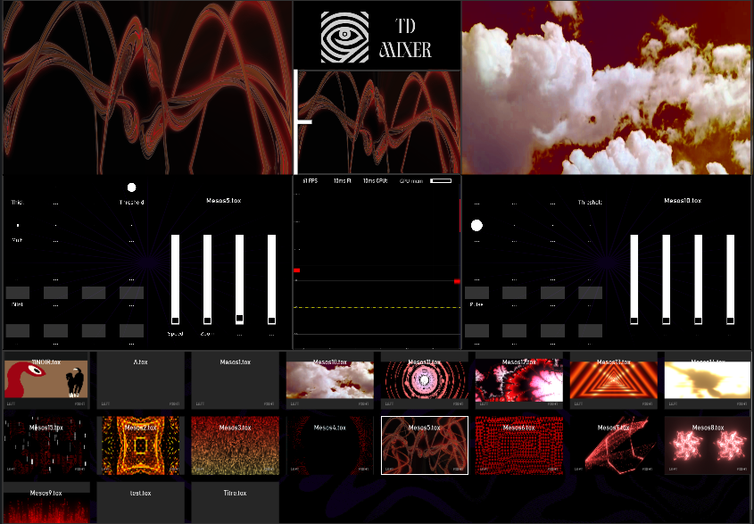
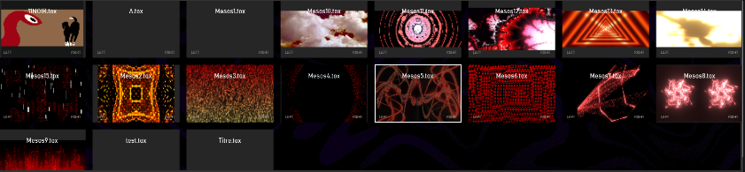
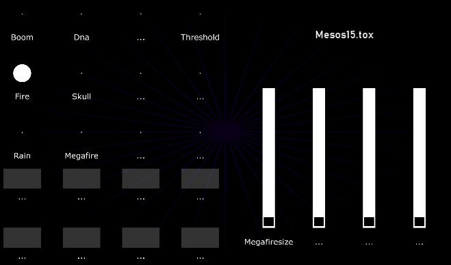
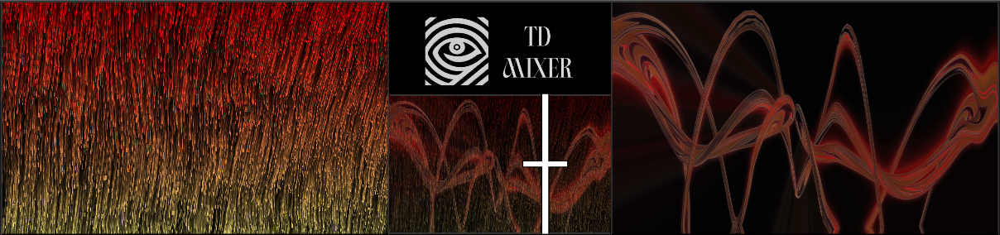
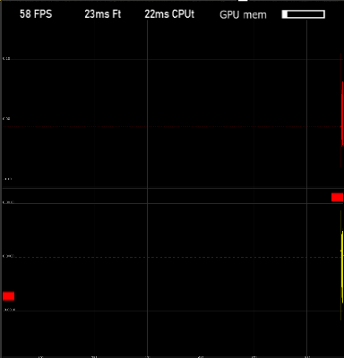

.
├── TouchDesigner_Project.toe
├── TOX
│ ├── visual_scene_01.tox
│ ├── visual_scene_02.tox
│ └── visual_scene_03.tox
├── README.md
└── assets
└── img
└── tdmixer
├── interface_overview.png
├── touchdesigner_architecture.png
├── tox_browser.png
├── midi_mapping.png
├── ab_mixer_schema.png
└── audio_monitoring.png